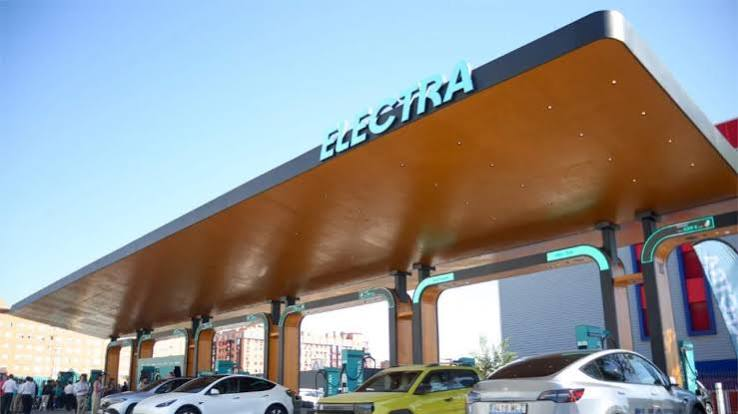
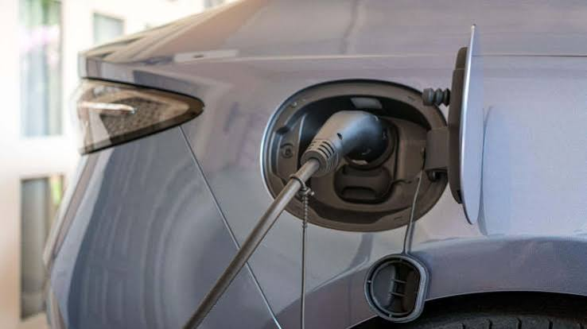
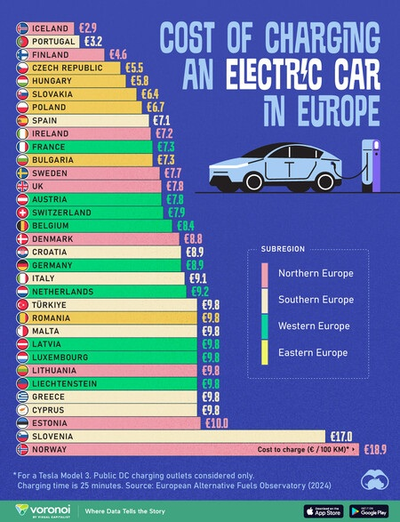
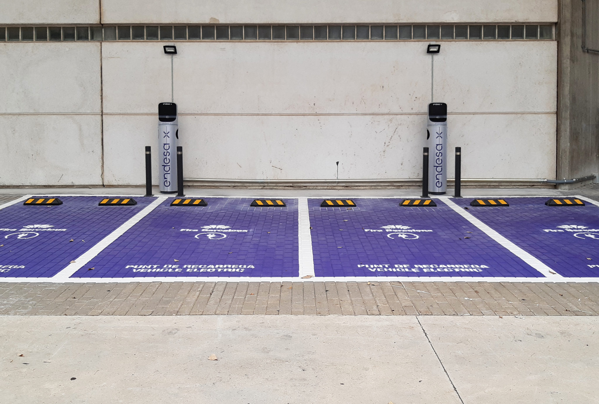
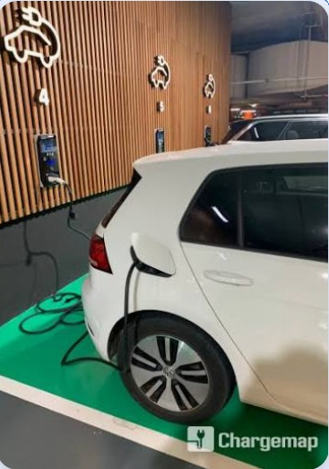
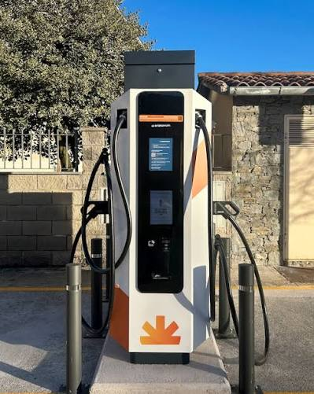

Nova estació ultraràpida a Barcelona
ElectraCat instal·la 8 punts de càrrega ultraràpida a la Gran Via de Barcelona.
 ElectroCatXarxa de Recàrrega
ElectroCatXarxa de Recàrrega
Mobilitat elèctrica a Catalunya
Una xarxa de recàrrega fiable, propera i preparada per fer més fàcils tots els teus trajectes.
Consulta els puntsActualitat

ElectraCat instal·la 8 punts de càrrega ultraràpida a la Gran Via de Barcelona.

Nou conveni amb l’Ajuntament de Girona per ampliar la xarxa de la ciutat.

La xarxa ElectraCat ha superat el milió de recàrregues anuals.
La nostra xarxa





Amb el suport de
| Empresa | Sector | Col·laboració |
|---|---|---|
| Endesa X | Energia | Subministrament elèctric |
| Wallbox | Fabricant | Punts de recàrrega |
| Ajuntament de Barcelona | Sector públic | Ubicacions urbanes |
| Tesla Supercharger | Fabricant | Compatibilitat de connectors |
| Iberdrola | Energia | Infraestructura verda |
| SEAT | Automoció | Vehicles elèctrics |